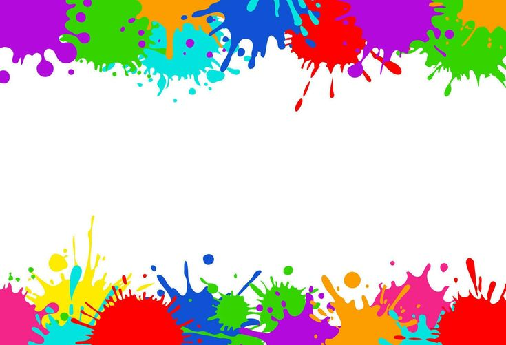

El poliéster es el tipo de tela ideal para obtener los mejores resultados en la sublimación, seguido de las mezclas de poliéster con otros materiales.

Somos los mejores y contamos con sublimación para: